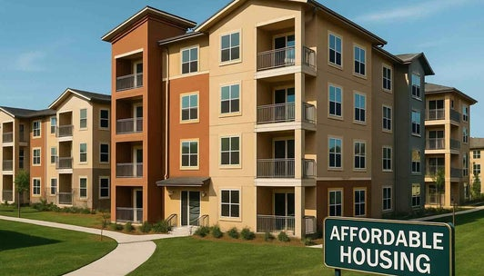
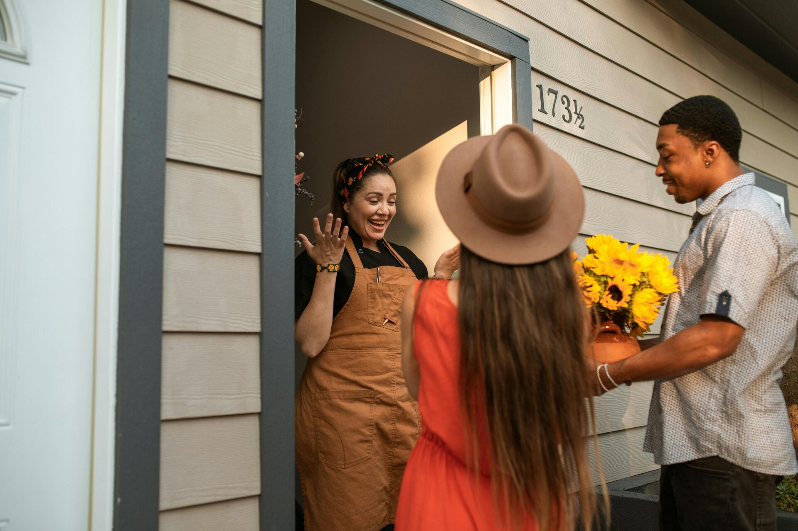
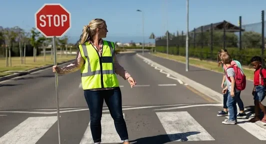
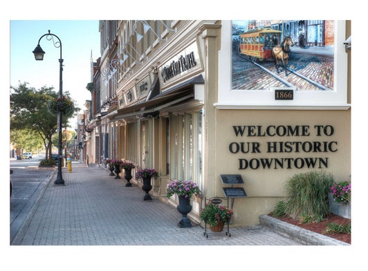
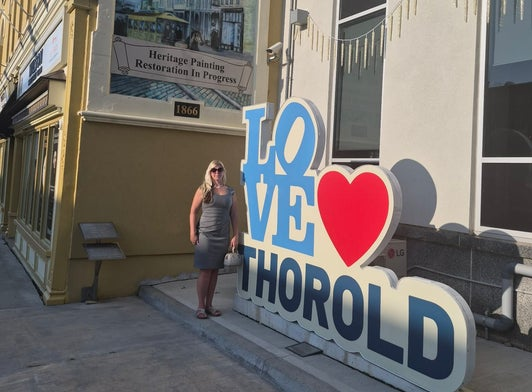
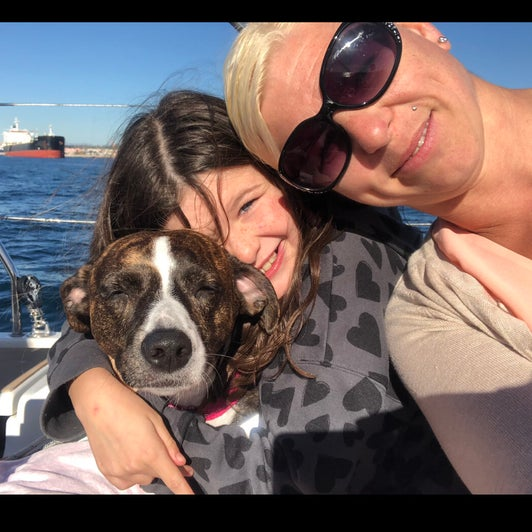

Housing & responsible growth
Support housing choices that meet the needs of families, seniors and future generations while keeping growth thoughtful and sustainable.
Thorold • 2026 City Council
Local leadership should be accessible, accountable and grounded in the everyday experiences of the people it serves.
Why I’m running
Proud to be a 4th-generation Thorold resident. I have a unique, long-term perspective on our city’s growth and potential. My decision to run for city council stems from a firm belief that local governance is the most direct pathway to community improvement. As Thorold navigates diverse challenges affecting citizens of all generations, I intend to serve as an accessible advocate for our residents. I understand how heavily municipal decisions impact our day-to-day lives, and I am running to ensure transparency, accountability, and active resident participation in shaping our city's future.
A practical local platform

Support housing choices that meet the needs of families, seniors and future generations while keeping growth thoughtful and sustainable.

Bringing open communication, honest governance, and accessibility so everyone's voice is heard.

Fostering a thriving climate for small businesses, commercial innovation, and sustainable job growth right here in our city.

Celebrate our historic downtown, neighbourhood character and local identity while planning confidently for the future.

Proud to call Thorold home
Good municipal leadership starts by listening, showing up, and working toward solutions residents can see and feel in their own neighbourhoods.

About Stephany
My background in community service, finance and local initiatives has equipped me with the skills necessary to collaborate with diverse groups and tackle pressing issues. I aim to promote transparency, accountability, and inclusivity in our local government. Together, we can work towards a vibrant, sustainable, and equitable city for all. I am dedicated to listening to your concerns and ideas, and I hope to earn your trust and support in this journey. Let’s build a better future for Thorold, together.
I work in Finance for a company in Niagara Falls. I am a single mother to an intelligent, charismatic 10-year-old girl. We absolutely love spending our afternoons watching live bands in Beaverdams Park or walking the boardwalk at sunset with our fur baby; Koda in Mel Swart Park. We have been involved with many groups, volunteering our time and giving back to the community. As a parent and in the past; Girl Guide Leader, my moto has always been “Be Prepared”. I believe it's important to teach our children hard work, survival skills and the worth of a dollar. I want to help families, when they feel alone or feel like they don't have options. With me, I will always strive for a solution. Let's find it together!
Events & Meetings
Campaign events, community meetings and neighbourhood conversations will be posted here as dates are confirmed.
Check back for confirmed dates, locations and event information.
Upcoming opportunities to connect with Stephany in the community will be posted here.
Confirmed public meeting and community forum information will be added as it becomes available.
Get involved
To ask about volunteering, campaign signs or other ways to get involved, contact Stephany directly.
Contact StephanyEndorsements
Endorsements will be added here as they are received and confirmed.
Stay connected
Visit Stephany’s campaign Facebook page for campaign updates, community posts, events and announcements.
Have your say
Please share your thoughts and opinions. If you would prefer to contact Stephany in private, email directly.